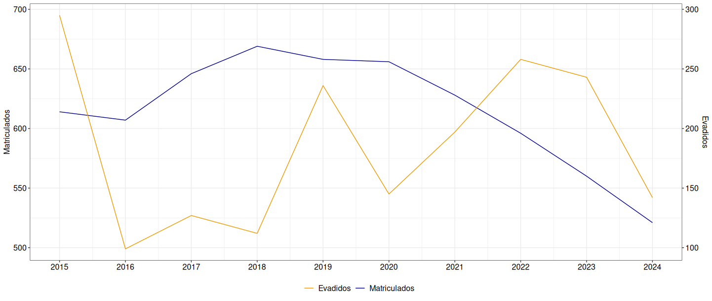
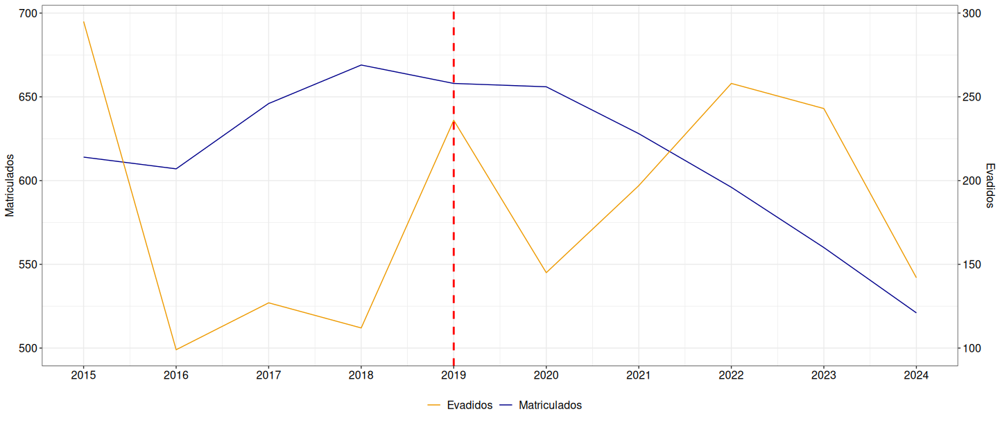

SiMEA - Sistema de Monitoramento da Evasão Acadêmica
Centro de Ciências Exatas
LECON/DEST - UFES
Última atualização: 15 maio, 2026
Sobre o projeto…
O projeto é intitulado “Fatores que afetam a conclusão dos estudantes de graduação da Ufes do Centro de Ciências Exatas”. O mesmo foi contemplado no Edital Conjunto n° 004/2024 Prograd/PRPPG.
Coordenador: Fabio A. Fajardo Molinares
Colaboradores: Luciana G. de Godoi (DEST/Ufes), Nátaly A. Jiménez Monroy (DEST/Ufes);
Bolsistas: Azzure Alves do Carmo e Nathália Dantas Handam Nunes.
Palavras-chave: Evasão universitária. Taxas de evasão. Perfis de vulnerabilidade. Políticas educacionais. Modelagem estatística. Ciência de dados.
Sobre os objetivos projeto…
Este projeto visa identificar os principais fatores associados à evasão dos estudantes do Centro de Ciências Exatas da Universidade Federal do Espírito Santo, utilizando uma abordagem quantitativa com ferramentas estatísticas e computacionais avançadas.
OB1. Desenvolver e validar um instrumento confiável e preciso para a coleta de informações relevantes sobre variáveis individuais, acadêmicas e socioeconômicas que influenciam a evasão;
OB2. Investigar como fatores individuais e contextuais (como características do curso e do ambiente universitário) interagem para influenciar a evasão;
OB3. Desenvolver modelos preditivos robustos para prever a probabilidade de evasão de estudantes, permitindo intervenções direcionadas com base em perfis de risco.
Cenário atual

Cenário atual

Estratégias definidas
A partir dos objetivos propostos, duas estratégias de trabalho foram definidas:
- Informações do SIE: Os dados obtidos nas bases institucionais da Ufes serão organizados, analisados e disponibilizados em um painel digital de livre acesso.
- Coleta de dados: Será construído um instrumento de coleta baseados na teoria de resposta ao item, garantindo precisão na avaliação de características individuais e contextuais dos alunos.
Os dados coletados serão analisados com o uso de modelos estatísticos convencionais e algoritmos de aprendizado de máquina, permitindo a identificação de padrões significativos e a identificação de situações com maior risco de evasão.
Coleta de dados
Foi construido um instrumento de coleta para ação individual e para monitoramento institucional, i.e., o instrumento de coleta será útil para prever o risco individual de evasão e identificar os itens que aumentam esse risco.
Público-alvo: O instrumento será aplicado para ingressantes e estudantes até 2 ano de faculdade. Pesquisas apontam que o período de 1 ano e meio a 2 anos de faculdade é o mais crítico e apresenta a maior incidência de evasão acadêmica.
Operacionalização das dimensões
Próximas etapas
- Pré-pilotagem: Etapa de verificação de interpretação dos itens. Tamanho de amostra estimado: 20 - 30 alunos;
- Piloto: Etapa de análise inicial para identificação de itens com baixo nivel nas medições. Tamanho de amostra estimado: 300 - 500 alunos;
Próximas etapas
Análise de DIF: O DIF (Differential Item Functioning) ou Funcionamento Diferencial do Item (Tradução livre). Na TRI refere-se a uma propriedade estatística onde indivíduos de grupos diferentes (ex: gênero, etnia, região), mas com o mesmo nível de habilidade ou proficiência, possuem probabilidades diferentes de acertar uma mesma questão (item). Por exemplo:
Considere-se o item: “Tenho dificuldade para administrar meu tempo para estudar.”
Imagine dois estudantes com o mesmo nível de autorregulação:
- estudante do turno integral;
- estudante trabalhador do noturno.
O estudante trabalhador pode marcar categorias mais altas não por menor autorregulação, mas porque: trabalha, enfrenta deslocamento ou porque possui menos tempo disponível.
Política de proteção aos direitos autorais
O conteúdo disponível consiste em material protegido pela legislação brasileira, sendo certo que, por ser o detentor dos direitos sobre o conteúdo disponível na plataforma, o LECON e o NEAEST detém direito exclusivo de usar, fruir e dispor de sua obra, conforme Artigo 5o, inciso XXVII, da Constituição Federal e os Artigos 7o e 28o, da Lei 9.610/98. A divulgação e/ou veiculação do conteúdo em sites diferentes à plataforma e sem a devida autorização do LECON e o NEAEST, pode configurar violação de direito autoral, nos termos da Lei 9.610/98, inclusive podendo caracterizar conduta criminosa, conforme Artigo 184o, §1o a 3o, do Código Penal. É considerada como contrafação a reprodução não autorizada, integral ou parcial, de todo e qualquer conteúdo disponível na plataforma.

Material elaborado pela equipe LECON/NEAEST: Alessandro J. Q. Sarnaglia, Bartolomeu Zamprogno, Fabio A. Fajardo, Luciana G. de Godoi e Nátaly A. Jiménez.